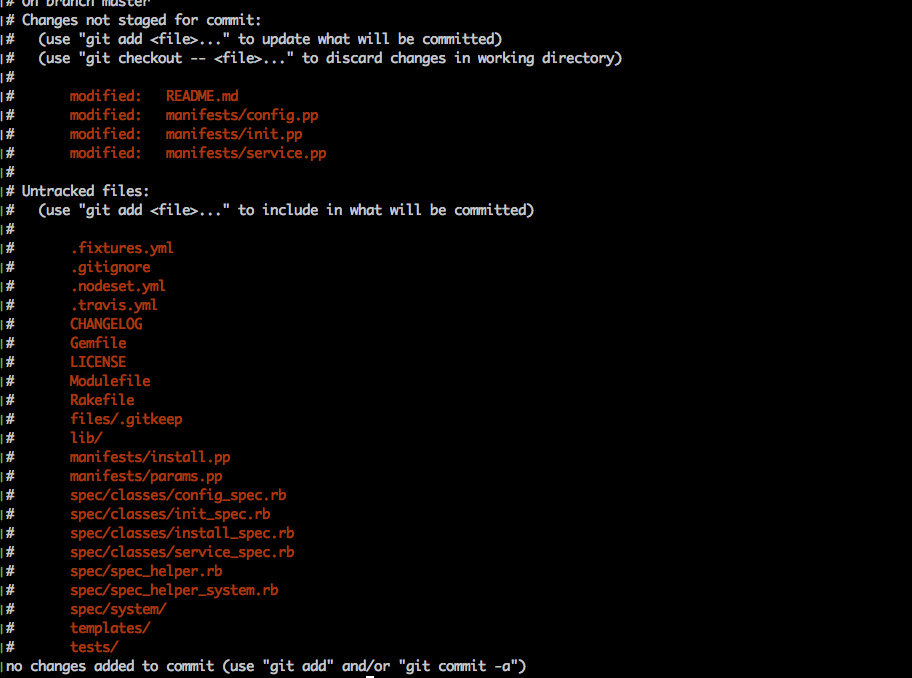
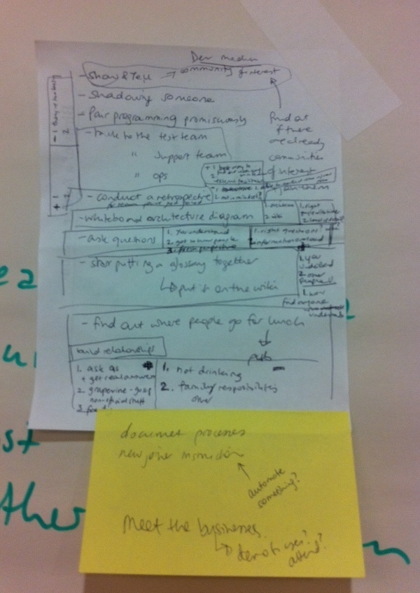
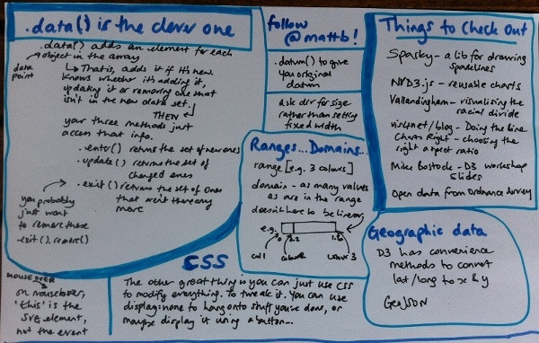
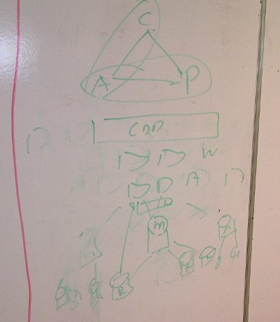
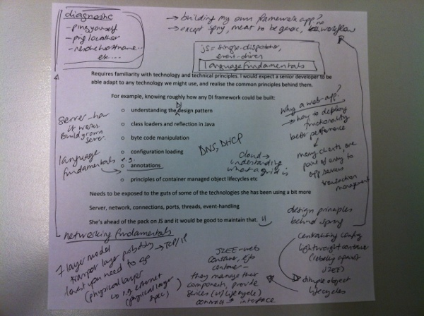
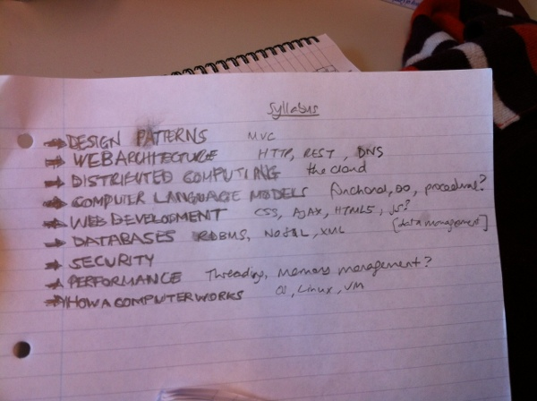
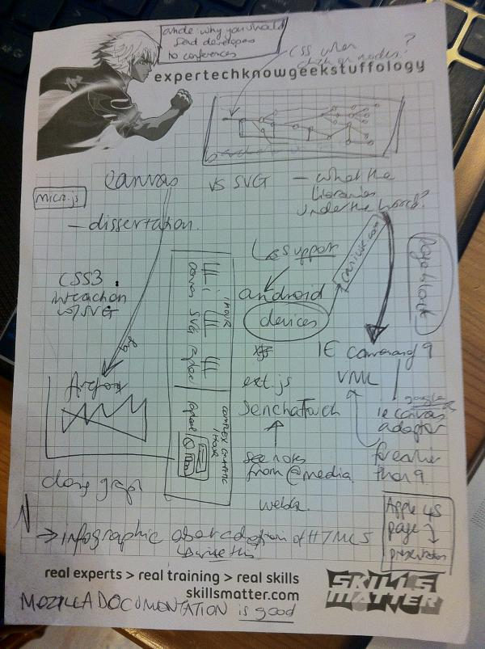
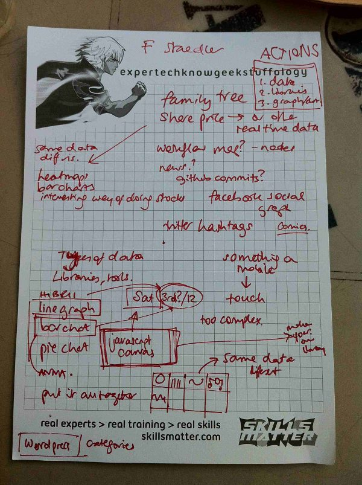
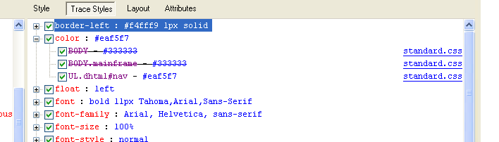

Creating a Puppet module
I learnt three very interesting things recently, courtesy of the brilliant Dan Carley.
While creating the Puppet manifests for the GOV.UK mirror, we realised we needed a module that was part of the GOV.UK Puppet, so our task was to pull it out into a standalone module and have both GOV.UK and our new GOV.UK mirror use it.
The first step in creating a new module is to pull it out into its own git repository.
First, clone the repository the module is currently in. (Extra learning here: you don't need to clone it from Github, you can just git clone the existing repository.) You want --no-hardlinks so it's entirely separate:
At this stage our puppet-auditd repo still points at our puppet repo, so we want to remove the remote:
Now we want to get rid of everything that's not our module and make our module the root, and this is where we use git filter-branch:
The next thing we want to do is create the files in the framework around the subdirectory to make it a Puppet module, for example the Modulefile. For this we can use our Puppet module skeleton. However, we don't want to directly follow the instructions there as we already have a lot of the classes we need. Instead of creating it from scratch as per those instructions, we generate our new module stucture:
and then then we copy over the generated files.
However, a normal recursive copy won't work:
This will only copy non-dotfiles, and we want the dotfiles as well, like .gitignore.
However, attempting to copy the dotfiles as well:
leads to hilarious results. .. is a directory too, so the above command copies all those contents recursively as well. Try it. It's most entertaining. But it's not really what we want.
What we can do is toggle what is included in A/* for this shell. The documentation is here, but this is what we need:
In order to check what is going to be copied now you can:
and if you like it:
The next step is to go through the files to work out which modifications to keep and which ones are not relevant.
Another tip from Dan: vimdiff is really useful for this task. I won't go into how and what we decided; you can see that here.
Some Regex in the form of a Picture!
Where Do I Start?
The first day at a new job is always a bit nerve-wracking. In a recent session at SPA 2013, we came up with some things a developer joining a new team can do to get up to speed quickly.
Whiteboard an architecture diagram
This is a brilliant way to get a quick overview of how the pieces of your new project fit together, and can be tailored to whatever level of understanding you (or the person you are talking to) has. It's a good way to meet people on other teams, when you're looking to get more detail on some of the parts of the diagram. And your fresh perspective can often be very useful to the person taking you through the architecture.
However, it can sometimes be hard to know who the right person is to ask, and it can also be hard to get the right level of detail.
Facilitate a retrospective
This is the fastest way to find out what's going on in a team, and beacuse you're new, you will essentially be an external facilitator which is really useful to the team. It's also a great way to find out what's going on in other teams once you've settled in.
However, it could be challenging if your new place of work is not used to agile working, and of course you do have to be the kind of person who has the confidence to faciliate a retrospective for a bunch of people you don't know yet.
Start putting a glossary together
...with the aim of putting it on the wiki.
This will give you a head start on understanding the concepts that the rest of team take for granted – and has the added advantage that you may hit on areas of vagueness or disagreement that can be straightened out.
It can however be hard to get started with this, and to work out what to focus on, and in some teams it might be a challenge to find anyone who understands them all.
In Summary: Do something, document something
People have different ways of learning and sometimes the explanations you get in your first week can lead to information overload and be hard to take in. So it can be useful to ask more directed questions, for example in pursuit of added detail for an architecture diagram, or to draw out actions for a retrospective.
We had some other ideas as well:
We also stole some ideas from other teams, like if the team's processes are not documented you could offer to do that as a way to gain understanding. For example, how well documented are the new joiner instructions? You are in a great place to improve those, and a big win would be automating some part of that. Also, meeting the users is a fantastic way to understand the business, so if that's not part of your induction you could arrange that.
Thanks to Andy Longshaw, Eoin Woods and Nick Rozanski for organising the session.
Roof Bug-fixing
I often find myself viewing life through the lens of software development, a bit like when you play too much Tetris and all your friends turn into shapes. But recent events have made me think: maybe other things actually would be better if they were more like software development?
Recently, I had a leak into my flat. By "recently" I mean it's been ongoing for four and a half months, but that's not what this post is about. This is about applying software development ideas to other fields, instead of the other way around. We talk about "software craftsmanship" – I'm thinking about the opposite, as applied to, for example, roofing.
I first noticed the leak as I was about to go on holiday before Christmas. It rained very heavily, and literally hours before I was due to leave, I saw water bubbling up between the laminate floorboards in the hall. I pulled up the vinyl on the bathroom floor and then took the side of the bath off, and found that my bathroom was about an inch deep in water.
Cut forward a fortnight to when the housing association manage to send out a surveyor to investigate. He tells me what is causing the problem: the flat above and to the right has – without permission – erected some kind of structure on their balcony, and this has caused damage to the brickwork, so when it rains water is seeping into my flat through the holes in their balcony.

At this stage, it's a bit of a mystery to me how that works. And why shouldn't it be? I'm not a roofer. Or a surveyor, or a builder, or an architect. I have only the vaguest notion of how buildings are put together, and I don't think to ask for an explanation of how the water is filling up my flat. Apparently, the Offending Neighbour has drilled a hole to put up the mystery structure, and the hole is the problem. They are going to asphalt over it. And they do so.
All well and good, and the insurance company come round to measure up the flat to fix the damage. Except the day they come to do this, it rains heavily, and once again, I see water bubbling up through the floor in the hall. They have asphalted over the hole in the balcony, but this hasn't fixed the leak!
A builder comes to my flat to discuss it with me. This is where it starts to get interesting. The builder has already looked at the Offending Neighbour's balcony and now he wants to look at my flat. But he can't see how the pieces fit together. Eventually, I have to take him outside to point at the balcony to demonstrate that water coming from the balcony at the point at which it intersects with my flat would lead to damp at exactly the spot we see it, as per the diagram above.
This is when I first start to think of this in terms of a bug. Here is the point at which you need to look at the bigger picture. We're not talking about a bit of mistaken logic in a Ruby program affecting the output of that program. We're talking about a timeout two layers away. The manifestation of the problem is a long way from the cause, and you really need a view of the bigger picture to be able to reason about it.
So the builder goes away, and finally (after calls and emails and threats and complaints) the housing association get back to me and tell me that they are going to put something called flashing on the point at which the wall of my flat meets the wall of ON's balcony. This, they tell me, will definitely fix the problem.

So this makes sense to me. At this point, I've got an idea of the bigger picture, though the details of the water seeping through the brickwork and then somehow bubbling up through the floor are somewhat hazy to me. But I do have one strong opinion at this point: I want to be sure this time that they have really fixed it. At this point, I conceive of the idea of a water test.
You see, when we find a bug in our software, we try and recreate it. Then we know when we've fixed it. And something I was starting to notice here was that this wasn't happening. It was as if I had noticed the timeout, and made a configuration change in the general area, then marked the story as done and walked away. We don't do that, with software. And yet this situation that was making my life pretty inconvenient – three months in, my flat was covered in mould, smelt of damp and all my furniture was in one room while I waited for the leak to be be fixed – was being dealt with by people who seemed to be making general stabs in the direction of the problem, without any kind of theory or analysis.
Of course, I didn't quite realise that – you expect people to be professionals, whatever the job is. But I was sure I wanted them to do a water test.
But getting them to do this was pretty hard, even though it seemed completely obvious to me. What's the problem? Stand on the balcony with a hose, see if the problem is fixed! At one point, I was told it wasn't "feasible". I started to wonder if I was being too idealistic and actually a building was more like a huge legacy codebase where you may not even have access to all the libraries. Maybe I'd just have to accept a best guess instead of a rigorous approach.
Finally, four months in, I managed to persuade them to do it. The head of repairs at the housing association came round to instruct the roofer, but even as he did this he was complaining that the water test was pointless, a waste of time, as it was due to rain today anyway and that would test it. He didn't really grasp the idea that a water test is a controlled test – it's a way to control the input so as to work out whether the output is what you'd expect were your conclusions correct. Rain – apart from being unpredictable – is not controlled. For a start, it rains all over the building at once.
But then the roofer came round, and he was a true software developer.
We went up to the balcony together and he explained to me what he was going to do. Firstly, he was going to hose down on the balcony, not going over the edge. This was to test the flashing.
There is a gap between ON's fence and the wall of my flat. It seemed to me that the gap was too low and my suspicion was that rainwater was overflowing through the gap and thus soaking into my wall.

However, the roofer explained to me that this was the design of the balcony, to prevent flooding. If it rained heavily, the water would flow along the gully and into the drain, and the gap was to prevent the balcony flooding if the rain was too heavy.
However, secondly, he explained, he was going to hose down specifically through the gap and over the side of the wall of my flat so we could see what would happen if the balcony did flood. The reason he was doing these things separately, he told me, was so he could isolate the cause of the problem. If he did both at once, we wouldn't know what the specific problem was.
Yes! Exactly! This is why we don't make the arbitrary configuration change and correct the logic in the Ruby program at the same time, because then how do we know? This man was speaking my language!
The first thing took him about thirty seconds to discover. They turned the hose on the flashing, the water ran down the gully as planned and then – that was it. The drain was completely blocked. It took less than a minute for the balcony to flood and the water to start pouring through the gap and down my wall. Thus demonstrating another benefit of methodical testing – you surface things you might have assumed to be different.
Later, when unblocking it, the roofer told me it must have taken years to get to that state. One might have thought that ON would have reported it at some point in those years. But why would she? She may not even have noticed – presumably she doesn't hang around outside when it's raining. It had not occurred to any of the previous investigators of this problem to check the drain. And while it may seem an obvious thing to have checked, one often overlooks the obvious, and that is why testing is good.
The second thing took this software genius of a roofer a few more minutes to discover. After unblocking the drain, he hosed down the side of the my building and at this point I found that there was water coming in under the bath again. He looked closer at the building and saw, under where the balcony joined my wall, a gap.

Having hosed the wall, he had seen that water ran into that gap and from there, the easiest escape would be into my flat, rather than back out. By attempting to recreate the problem, he identified the solution.
So he unblocked the drain, and he filled in the hole with cement. And then, as if he had not covered himself in glory enough, he told me he was only 95% certain that this would solve the problem, whereas the previous fixes, I had been assured, were the solution. He knows a building is a legacy system. But he has the software methodology approach.
There's more learning here as well – for example, to not assume that you won't understand a problem that isn't in your field – but the main thing I took from it was this: everything would be better if it was a bit more like software development. Craftsmen should be more like software developers.

Upgrading to 12.04...
I needed to write some code. Thanks to George Brocklehurst, I was no longer content to do this on my personal laptop using gedit – I required Vim.
But I could not upgrade Vim!
E: Unable to fetch some archives, maybe run apt-get update or try with --fix-missing?
OK, maybe it was unrelated, but it was time to face the inevitable. I was on Ubuntu 10.10. I needed to upgrade. Skip to what I learned from this sorry saga.
Great, so all I needed to do was update to next package from the Update Manager, right?
A problem occurred during the update. This is usually some sort of network problem, please check your network connection and retry.
, W:Failed to fetch http://extras.ubuntu.com/ubuntu/dists/natty/main/binary-i386/Packages.gz 404 Not Found
, E:Some index files failed to download, they have been ignored, or old ones used instead.
Ah. Wrong. I left it so long that it was no longer supported.
Right, so I couldn't go to 11.04. But actually, I didn't want 11.04, I wanted 12.04. So can I not just go directly there?
Well, no, as it turns out. Or maybe you can. I still don't know. But threads like this suggested that I couldn't go directly to 12.04 without doing a fresh install and losing my files. I didn't fancy that, so I thought I'd go the long way round.
Since I was out of time to upgrade via the Update Manager, I needed to download the 11.04 ISO, confirming that it was, as I thought, 64-bit:
x86_64
and then save the ISO to a CD. Having not done this before, I found this useful. You want the CD to have multiple files and folders, not just the ISO as one file.
Great. So then you stick the CD in and just follow the instructions. Like these. Fine. No problem.
Except... problem. This bit? That hung there for HOURS. If you click the arrow you can see the command it is hanging on, but Googling that on another computer (which I had by now switched on in order to continue with my life) gave me nothing.
I'm telling you this, even though I'm embarrassed: I killed it. It had been hanging there for hours! I couldn't take it any more!
And funnily enough, that turned out not to have an ideal outcome... it would not boot. On the plus side, it's dual boot and Windows seemed fine, though at this stage, I was pretty sure I could "fix" that too:
Current status xkcd.com/349/
— Anna Shipman (@annashipman) March 31, 2013
Fine, never mind, all my files etc were backed up, it's no biggie. In fact, I could just install Ubuntu 12.04 at this point? Since it appeared that I may well have lost all my files.
Except somehow, no. The other computer I was using was Windows, and – who knew? – it wasn't so easy to get the ISO onto a CD. After some trying, I gave up.
Next plan was to install 11.04 from the disc I actually had. And, to my joy and incredulity – THIS WORKED!
Omg! So I've managed to upgrade to 11.04. I mean, yeah, I was aiming for 12.04, and OK, so I've lost all my files but, y'know, go me!
— Anna Shipman (@annashipman) March 31, 2013
And then, amazingly, the upgrade to 11.10, and then 12.04, could be done via the Update Manager. Finally, six hours after I'd embarked on this foolish mission I was able to report back:
Made it to 12.04! Hurrah! All I need to do is restore my lost files from backup and then I can get on with what I planned to do 6 hrs ago...
— Anna Shipman (@annashipman) March 31, 2013
...shortly followed by...
Current status (finally!) i.imgur.com/VhlQK.gif
— Anna Shipman (@annashipman) April 1, 2013
So what have I learned?
- How to check your system is 64-bit.
- How to embed tweets into blog posts (click the 'More' button to the right of the 'Favourite' button and all will be revealed).
- Not to put off the upgrade until such time that it's no longer supported and you have to go through all this!
- ALWAYS be backing up your files. As Jeff Atwood said, "until you have a backup strategy of some kind, you're screwed, you just don't know it yet". This could've been much worse for me.
Happy programming!
Partitioning!
Today I learned from the awesome bob how to add storage to a box, including partitioning, mounting, and other things I'd heard of but had never done myself.
We had to add some storage to the elasticsearch boxes. We generate a lot of logs and they all go to elasticsearch. By default when we provision servers we give them 32GB but this wasn't enough. So here's how to do it:
- Add the extra disk through our virtualisation platform's control panel.
- Reboot the box so that it sees the new disk.
- Partition the new disk. There are many ways to partition a disk - we used cfdisk, which has a GUI.
cfdisk /dev/sdbThis opens the GUI and then you tab through it to select options. We just accepted all the defaults, so the only time we had to change it was at the end, to select [write]. We did consider making the type Linux LVM as this would have meant we could extend it later, but in this case we just accepted the default type of Linux.
This means that as well as /dev/sdb we have /dev/sdb1. (Extra learning points here - disks are added alphabetically. So the existing disk was sda. If, subsequent to this, we add another disk, it will be sdc.) - Before we can mount the disk we need to give it a filesystem. We gave it ext4 because "everything uses ext4
these days" (bob). If you don't have a good reason for picking one of the others, then
use ext4.
mkfs.ext4 /dev/sdb1
- Now we mount the new disk to a temporary directory:
mkdir /mnt/tmp
mount /dev/sdb1 /mnt/tmp - At this point we need to stop elasticsearch and also disable puppet (otherwise it will just start elasticsearch again on its next run):
service elasticsearch-logging stop
puppet agent --disable - Now we need to copy the elasticsearch indices to the new disk. Because the indices are just files you can rsync them, as long as elasticsearch has been stopped, which it has.
rsync -av --stats --progress /mnt/elasticsearch/* /mnt/tmpThe -v flag above is 'verbose', and in addition, the stats and progress options give some more noisy output while the rsync is going on. Often, when using rsync you would want to add -z, but since this is just from one disk to another and not going over the wire then there's no need here. Finally, -a is 'archive'. As the man page helpfully notes, this is "same as -rlptgoD (no -H)". I will leave that as an exercise for the reader.
This stage takes some time. - When it's finished, we did two things, just as a (slightly paranoid) check
to see if it worked:
- Run the same command again. If it has successfully rsynched everything, the two will be the same so it will output immediately.
- du -sh to check that /mnt/elasticsearch and /mnt/tmp are the same size.
- Instead of mounting the new disk in the same way as step 5 above, we can edit /etc/fstab. We add this line:
/dev/sdb1 /mnt/elasticsearch ext4 defaults 0 0We should have thought about using Puppet here, as doing it like this means there are parts of the infrastructure that are not code.
- Next, we unmount sdb1 from /mnt/tmp:
umount /mnt/tmp
- Then, we move the old elastic search directory and create a new one:
mv /mnt/elasticsearch /mnt/elasticsearch-old
mkdir /mnt/elasticsearch - Now mount the sdb1 to the new elasticsearch. Because of step 9 above, we can pass either the mount directory or the directory to be mounted; we do not need both. This has the added advantage of testing our fstab setup.
mount /mnt/elasticsearch
- All done! Now we need to:
- Restart elastic search
- Re-enable puppet
- Delete /mnt/tmp and /mnt/elasticsearch-old
Roof Hacking
Two weeks ago I was at the excellent /dev/fort. More on that another time; all I'll say now is that we were making a website in a fort.
On one feature I was pairing (actually, tripling...) on some Django with the awesome George Brocklehurst and the brilliant James Coglan. James and I took a break to look at the causeway being underwater at high tide, and when we returned we found that George had relocated from our previous office (the green sofa) to the flat roof of the officers' mess. With his phone playing Ben Howard's cover of Call Me Maybe and glasses of whisky hand-delivered by the fantastic Chris Govias, it was perfect.
Except it wasn't, because George's battery was running low, and he couldn't push his changes to my laptop because the wifi didn't reach that far. "Of course, we could always set up a local wifi on the roof," said George. Was he trolling me? No, he was not, and here's how:
George committed to a local branch and then set up his mac as a network hub (a computer-to-computer network).
Then I added a git remote that pointed at the repository on George's machine:
The IP address here was his machine on the network he'd created, and it was his ssh login (so I needed him to enter his password).
This included the pleasure of having to type:
Then I merged george's branch into mine:
and we were ready to use my computer to continue the good work.
Photo by the aforementioned brilliant James Coglan.
How to Estimate
I want to share this great idea about estimating that came from the excellent Mazz Mosley. Instead of worrying about estimating in hours or days, estimate in story points as follows:
1: This is trivial. I know exactly the code I would write if I went back to my desk right now.
2: This is quite easy. I know roughly what I'd have to do. I might have to look one or two things up.
3: This is a bit complex. I might have to refresh my memory on a few things and there are a couple of unknowns.
5: This is big. I have only a rough idea of how I'd do this.
8+: I don't know how to do this.
I've written 8+ rather than the more standard 8, 13, 21 etc because in our team we had an additional rule – if it's 8+ then the story is too big and you need to break it down a bit more. Maybe have a timeboxed spike? Then you will have more information for the next planning meeting.
It doesn't matter how much time each point ends up being (and this will vary from team to team); after a few sprints of estimating like this the velocity will become meaningful and you can use it for predicting how much work you'll get through in future sprints.
Learning the perls
After some time muddling through with Perl, I have accepted the inevitable – it's time to actually knuckle down and learn it properly. I have acquired some books, but I also require some direction – so I asked my excellent colleague and friend Mark Norman Francis to write a brief guest post for my blog.
His instructions were "Complete the sentence: In order to understand C you need to understand Pointer Arithmetic. In order to understand Perl you need to understand...". He went many better, and produced the following:
- Perl's provided documentation is extensive and worthwhile, so learn to use `perldoc` to read both the provided manuals and the documentation of the builtin perl functions.
- Learn the difference between variables – scalar, array, hash, and references (hint for references: learn to make a hash of hashes).
- Learn how to use an array as a stack.
- Basic regular expression usage – matching, replacing, capturing substrings, case-insensitivity, metacharacters, and writing more readable expressions by having perl ignore the whitespace.
- Learn to use perl on the command line as a pipe filter instead of awk/sed.
- Learn how to write your own functions.
- Learn how to use core modules such as `File::Find` (write a tool to list files in a directory structure from smallest to largest in size).
- Refactor the code from step 7 to use a Schwartzian Transform to sort the file sizes.
- Learn how to install third-party libraries from CPAN.
- Install Moose from CPAN, then work through `Moose::Manual` and `Moose::Cookbook` to learn to write modern OO perl.
- Learn how to use `Test::More` to test code and `Devel::Cover` to produce coverage reports.
- Find an abstract intro to OO example (such as employee payroll) and write it in Moose with full unit test coverage.
- Lastly, read the `perlstyle` documentation, and then write your own style guide.
Thanks, Norm. Thorm.
Learning More About D3
I had a really inspiring chat with Matt Biddulph about D3 this week. He showed me some really cool things. I made some notes.
CAP again – or should that be PACELC?
The last thing I wrote about was the CAP Theorem. Last week, Tom Hall visited our office and gave a very interesting talk, the central thesis of which was that the CAP Theorem, as often explained, is incorrect – or at least not very meaningful.
The first point, explained very clearly in CAP Confusion: Problems with 'partition tolerance' is that P, "Partition Tolerance", as per the proof of the CAP Theorem, is not a property of your application; rather it is a property of the network it's on. The network may partition. To quote from Henry Robinson's Cloudera article:
"Partition tolerance means simply developing a coping strategy by choosing which of the other system properties to drop. This is the real lesson of the CAP theorem – if you have a network that may drop messages, then you cannot have both availability and consistency, you must choose one."
The rest of the article is very worth reading.
The second point Tom covered is from Problems with CAP, and Yahoo's little known NoSQL system by Daniel Abadi. Abadi covers the point above very clearly, and then points out that there is a missing letter from CAP – L, for latency.
"Keeping replicas consistent over a wide area network requires at least one message to be sent over the WAN in the critical path to perform the write... Unfortunately, a message over a WAN significantly increases the latency of a transaction... Consequently, in order to reduce latency, replication must be performed asynchronously. This reduces consistency."
He suggests CAP should be rewritten as PACELC:
"If there is a partition (P) how does the system tradeoff between availability and consistency (A and C); else (E) when the system is running as normal in the absence of partitions, how does the system tradeoff between latency (L) and consistency (C)?"
Tom's talk covered many other interesting topics and is worth catching if you can. One of the other many interesting things Tom talked about was Vector Clocks. I won't go into that here, but they are worth reading up on! Here is a potential place to start...
The CAP Theorem and MongoDB
This week I learned some things about MongoDB. One of them was about how it fits in with the CAP theorem.
They say a picture is worth a thousand words, and I think this diagram from my excellent new colleague Mat Wall while he was explaining it to me says everything:
Over and out.
OK, perhaps I can offer a tiny bit of exposition.
The CAP Theorem is: where C is consistency, A is availability, and P is partition tolerance, you can't have a system that has all three. (It gets to be called a theorem because it has been formally proved.)
Roughly speaking:
- Consistency means that when two users access the system at the same time they should see the same data.
- Availability means up 24/7 and responds in a reasonable time.
- Partition Tolerance means if part of the system fails, it is possible for the system as a whole to continue functioning.
If you have a web app backed by a SQL database, most likely, it is CA.
It is C because it's transaction-based. So when you update the database, everything stops until you've finished. So anything reading from the database will get the same data.
It can be A, but it won't be P because SQL databases tend to run on single nodes.
If you want your application to be P, according to the CAP theorem, you have to sacrifice either A or C.
With MongoDB, in order to gain P, you sacrifice C. There are various ways to set it up, but in our application we have one master database, that all writes go to, and several secondaries (as can be seen from the diagram: M is the Master, the Rs are the secondaries – also called replicas, or slaves). Reads may come from the secondaries. So it is possibly that one or more of the secondary nodes could be disconnected from the application by some kind of network failure, but the application will not fall over because the read requests will just go to another node. Hence P.
The reason this sacrifices C is because the writes go to the master, and then take some time to filter out to all the secondaries. So C is not completely sacrificed – there is just a possibility that there may be some delay. We are not allowing a situation where the secondaries are permanently out of synch with the master – there is "eventual consistency".
So you might use this in applications where, for example, you are offering the latest news story. If User A gets the latest news 10 seconds earlier than User B, this doesn't really matter. Of course, if it was a day later, then that would be a problem. The failure case of C is just around the time of the write and you want to keep that window of consistency small.
There is also a concept of durability, which you can also be flexible with.
Take the following two lines of pseudocode:
1. insert into table UNIVERSAL_TRUTHS (name, characteristic) values ('Anna', 'is awesome')
2. select characteristic from UNIVERSAL_TRUTHS where name = 'Anna'
What we're saying when we sacrifice consistency is, if I run these two lines on the same node then when I run line 2, I can be sure it will return 'is awesome'. However, if I run line 2 on a different node, I can't be sure it's in already. It will still be "eventually consistent" so if I run it later (and it hasn't been changed again in the interim) it will at some point return the correct data.
However, you can also configure MongoDB to be flexible about durability. This is where, if you run the two lines of code on the
What Should Your Work Log Tell You?
We've got some great data for the SPA2012 workshop on JavaScript visualisations. Hibri has managed to obtained three years' worth of 7Digital's work-tracking data and Rob has very kindly allowed us to use it (anonymised, of course).
We're going to use this dataset to show different information using different libraries for the visualisations.
What I'd really like your input on is, what would you like to know? If this was your work-tracking data, what questions would you want it to answer?
For example, we could create a Sunburst diagram using JIT to show what proportion of total development time is spent on the four different applications. We could create an interactive line graph using Raphael to show the average time a piece of work takes, and how that average has changed over the past three years.
A little more info about the exact data is below, or feel free to skip straight to the example questions, or just go right ahead and tweet me or email me (at this domain) with what kind of information you'd want from a work log stretching back that far. You might get a great visualisation prepared for you to show just that!
The Data
Here is an example:
"Feature ID": "A-321", "Application Name": "Project A", "Type": "Bug", "T-Shirt Size": "S", "Added": "15/03/2011 12:12", "Prioritised, Awaiting Analysis": "15/03/2011 12:12", "Analysis Completed": "15/03/2011 12:12", "Development Started": "15/03/2011 13:21", "Systest Ready": "15/03/2011 16:21", "Systest OK": "17/03/2011 10:34", "In UAT": "17/03/2011 10:34", "Ready For Release": "17/03/2011 10:34", "In Production": "17/03/2011 10:35", "Done": "22/03/2011 10:48", "Lead Time": "2", "Cycle Time": "2", "Development Cycle Time": "2"
So this is a really rich dataset. We have all the dates that various stages of the release process happened, as well as some information about what application it was for, what type of work it was (e.g. Bug, Feature, Build Maintenance), what the rough estimate was (T-shirt size), and how long the whole process took, both from first raised to done (lead time) and from dev start to done (development cycle time). The log goes back to 2009.
Example Questions
Here are a few of the questions we've thought about answering.
- How many bugs are raised by application?
- How does the average cycle time of development compare to the number of bugs raised?
- How often are bugs reported and not worked on?
- What proportion of time is spent on each applications, and, drilling down, what proportion of that work is new features/bugs/build maintenance etc?
Your Chance for a Hand-crafted Visualisation Just for You!
We'd love this workshop to be as relevant and interesting as possible, so please do let me know what kind of information you'd like to see visualised and it may well make it into the talk! Tweet me or email me at this domain. Thank you!
P.O.A.
My goal is to be a better developer.
A few weeks ago, I had an appraisal. There was a lot of positive feedback and also some really useful suggested areas for development. With the help of my good friend and unofficial mentor Dolan O'Toole, I pulled together some practical suggestions as to how I could improve them:
I then drew up a rough syllabus of the next steps I should focus on:
I'd be interested if any of you have suggestions for additions to this? What should a great developer know?
Would Have Been Useful to Know at My First Game Jam
I had no idea what to expect at my first game jam, and I was nervous about whether I'd be able to participate. I'm a programmer, but I'd never written a videogame, and I don't even much play videogames.
As it turned out, everyone was really friendly and welcoming and I was able to get totally stuck in. But there were a few things that I didn't know that everyone else seemed to know, and I was too shy to admit I didn't know too. Now, following my new and brilliant strategy of "ask as many questions as you can, the stupider the better" (more on that in a later post), I have managed to learn some of these things, and I'll share them here. They are the game engine, game mechanics, and a little bit about art.
The Game Engine
When writing video games, people talk about the "engine". For example, "What engine are you using?" and "Don't write your own engine; this is not 'engine jam' ".
A game engine is something that handles the nuts and bolts of a game for you, which basically comes down to displaying the graphics, dealing with input (keyobard, joystick etc), and handling collisions. For example, in a game, when your player runs into a baddie you might want them to bounce off each other at an equal pace. Using a game engine means you can just specify the details of the collision. Not using a game engine means you have to write code to describe the angles and velocities yourself.
Unity is a game engine that handles all this stuff for you. You can copy your art into the folder structure and then drag and drop it to where you want it to be. Game objects have default collision behaviour and you can just write a script to change it.
Flixel is another game engine. It's a level below Unity – there's no graphical user interface, and you have to do a bit more work with the graphics, but the collisions, keyboard input and various other features are there for you.
A Note on Writing Your Own Game Engine
I didn't understand at the time why my second game jam was so much harder than my first, but when I explained what we did to the brilliant Joe Halliwell afterwards, it all became clear. We disobeyed the advice. We wrote our own game engine.
To be precise, we used OpenGL, which is a 2D/3D Graphics API written in C. It gives the instructions to the graphics card – you definitely don't want to be doing that yourself – at least not in a 48-hour game jam. The code was written in Python, and for the binding we used PyOpenGL. For the physics we used Box2D. OK, so we didn't exactly write our own game engine from scratch, but we assembled one from various constituent parts.
The alleged reasons were that we didn't know Unity, most of us knew Python (except for me – that added another layer of complexity to the weekend!) and between us we had two Macs, two Linux boxes and one loser running Windows. The real reason is that the brilliant Trevor Fountain loves this stuff and, if it existed, would sign up to 'engine jam' like a shot.
Game Mechanics
Another phrase I heard a lot and pretended to understand was "game mechanics". To be fair, I thought I did understand it – I thought it was jumping, shooting etc. I was wrong.
Game mechanics are more like constructs of rules. Unlocking an achievement is a game mechanic. Going up a level when you reach a certain number of points is a game mechanic. Dying when you lose 90% of your health bar is a game mechanic. So when someone asks "What are the game mechanics?", they mean something like, what are the gamey things here? What makes this a game, rather than just graphics moving across a screen?
I like this list of potential game mechanics.
A Little Bit About Art
While I'm here, just a few words on pixel art vs vector graphics, something else I heard talked about which added to the background radiation of feeling I didn't quite understand what was going on.
There's an extremely detailed article on the differences here but in very brief summary – technically speaking, pixel (aka bitmap, raster) art is basically dot-matrix, i.e. made up of pixels individually coloured, and vector art is created using mathematical functions and is basically points and the lines joining them. The art for your game may be either, or some combination of the two. A brief rule of thumb is that old games tend to use pixel art, but the choice is up to you – different tools for different times.
However, it's more than just the technical differences, and the conversations you hear about pixel vs vector art will probably reflect something other than the strict technical distinction. Trevor summed it up for me very clearly, so here is an edited version of what he said:
"To me, pixel art is more of an aesthetic choice than a technical term. It's true that older games had a pixel art aesthetic, especially on 8- or 16-bit platforms. Today, though, I think people use the terms 'pixel art' and 'retro' more or less interchangeably – games like Canabalt or The Last Rocket are undeniably retro, and use the pixel art style to great effect. Games like Angry Birds are rendered using the same technology (2d sprites), yet no one would ever say that Angry Birds qualified as pixel art.
"As for vector art, true vector images (e.g. svg) are rarely used outwith UI design and Flash."
Next steps
How to Make Your First Videogame by the excellent v21 is great, and the short video You Can Make Video Games is fab and really worth watching. Or why not just sign up to the next Global Game Jam?
Enjoy!
JavaScript Talk Takes Shape
Just over a week to go until the final deadline for the SPA submissions, and the JavaScript visualisations talk is shaping up.
The plan is to demonstrate the use of a JS library to produce a certain kind of visualisation, followed by a 15-20 minute exercise where participants use the library to create a similar visualisation. I've said "rinse and repeat 4-5 times", though I'm slightly dubious as to whether we're going to have time to do more than three. Hibri and I are going to do one each and demo to the other, so we'll have a better idea then of how many we can cover. I'm really excited about what we're going to produce!
At the moment we are planning to try and do:
- A force-directed graph (library tbc, possibly d3)
- A sunburst diagram with JIT
- An interactive line graph with Raphael
- A bar chart (library tbc, possibly just using Canvas)
- A stream graph (library tbc, possibly d3 if not using d3 for force-directed)
- A heat map (library tbc)
Is there a type of visualisation you'd really like to see us demonstrate, or a library you think we can't miss out? Please do let me know.
There is also still time to give feedback directly on this and all other proposals for SPA 2012 here (SPA login required).
Preparation Begins for the JavaScript Talk...
As part of preparing the proposal for the JavaScript visualisations talk, I had a coffee with Ian Alderson. He did an excellent talk at SPA2011, along with Adam Iley, on HTML5. The presentation is still available online (using HTML5 for the slides!) here, I really recommend you check it out.
Although Ian doesn't have time to co-pilot on the talk, he very generously gave up his time to give me some advice. Notes below. The first suggestion of his that I plan to follow is a comparison between SVG and Canvas – as he pointed out, all JS visualisation libraries will be based on one or the other, so that will definitely be a factor in what library to choose. It's not the case that one is just better than the other – both have strengths and weaknesses. Watch this space for more on this topic...
JavaScript Visualisations Proposal
I have proposed a talk for SPA2012 on JavaScript visualisations.
The basic outline of the proposal is a workshop where we will demonstrate the use of different JS libraries to visualise different kinds of data with several 15-20 minute exercises where participants use the library to create a similar visualisation. Ideally participants would leave with an overview of how and when to use the libraries and tools we've covered, and ideally an idea of what factors to think about when choosing a JS data visualisation tool.
Still in the very early stages of planning it, but I am in the process of moving this site over to a host that will support WordPress, at which point I will be able to invite comments/suggestions. In the meantime, any suggestions are very welcome, by email or twitter.
Notes from the first planning meeting, with Hibri:
My Continuing Struggles with Linux
Summarised excellently by this cartoon. It's great fun, but...
Sorl-thumbnail Comes Back to Bite Me
Well, the lack of sorl-thumbnail came back to bite me when I got the latest version of the Django project I've been working on. Previous releases had lulled me into a false sense of security, but then the latest update, a bit too late in the evening, I had that old error:
ImportError: No module named sorl-thumbnail
So off I went again. I had no problem downloading sorl-thumbnail but everywhere I went wanted to put it into the wrong directory. It's not in the Synaptic Package Manager, and I couldn't find a PPA. Just to make it a bit more exciting, the dependency of the project I needed it for was something like version 3.2.5. The current version is 11.0.4.
Ideally what I wanted to be able to do was set some kind of flag on the install that told it to install somewhere else. Surelly there is a way to do that? But I couldn't find it. I had got as far as actually (again!) RTFM, and was browsing through the Core Distutils functionality page when lo and behold, I stumbled upon this. Not directly relevant you might think – but wait, item 13? What's this?
Yes, to cut a long story short, I had discovered symlinks. New to me, old to everyone else. It was short work to set one up, helped by this, and lo and behold: it works.
Kind of begs the question as to why I didn't do that in the first place for all the packages... but never mind. Onwards and upwards!
How to Write Efficient CSS – Evaluation of CSS
I recently did a knowledge share at work on how to write efficient CSS, and one of my colleagues – a senior developer with a lot of experience – said "I felt the penny drop". High praise indeed, so I thought it was worth reproducing it here.
The write-up is pretty long, so I've divided the divs into Basic CSS in which I cover:
and Evaluation of CSS in which I cover how CSS is evaluated and some things we can do to make it more efficient.How CSS is Evaluated
The key information is these two points:
- For each element, the CSS engine searches through style rules to find a match.
- The engine evaluates each rule from right to left, starting from the rightmost selector (called the "key") and moving through each selector until it finds a match or discards the rule.
1. For each element, the CSS engine searches through style rules to find a match
The style system breaks rules up into four categories by key selector.
- ID Rules – for example button#backButton { ... }
- Class Rules – for example button.toolbarButton { ... }
- Tag Rules – for example treeitem > treerow { ... }
- Universal Rules – all other rules
The CSS engine then takes each html element in the document in turn. If it has an ID, then the engine searches through the style rules and checks rules that match that element's ID. If it has a class, only Class Rules for a class found on the element will be checked. Only Tag Rules that match the tag will be checked. Universal Rules will always be checked.
2. The engine evaluates each rule from right to left...
So in the example button#backButton { ... } the key is the id "backButton". In the example I give in Basic CSS the key is the class "blog-post".
The engine starts with the key and then evaluates the rule from right to left. So if you have a button with an id of "backButton", the engine first matches the id to the id and then compares the next selector – is the element a button? In the example from Basic CSS the evaluation for the second selector, ul#nav.dhtml li a.blog-post, is as follows. Does the element have a class of blog-post? If so, is it a link? If so, is there anywhere in its ancestry a list item? If so, is there anywhere in the ancestry of that list item an unordered list element with a class of dhtml and an id of nav?
You may be getting a slight clue now as to why I think that selector is inefficient.Recommendations
There are some obvious ways we can start here.
- Firstly, remove unused CSS. It's not like, for example, unused Java code which really just slows things down for other developers. The CSS engine is going to search through every rule for every element. The fewer rules required to check for a given element, the faster style resolution will be.
- Avoid use of descendant selectors – they speed up page development, but they slow down page rendering.
- Avoid qualifying ID selectors at all – as IDs should be unique so adding extra qualification is unnecessary and costly.
- It's a good idea to avoid use of html elements in selectors for a couple of reasons:
- The style will be lost of the element type is changed
- The less specific the key the greater the number of nodes that need to be evaluated
- Avoid use of child selectors. They are more efficient than descendant selectors, but they are still inefficient: for each matching element, the browser has to evaluate another node. It becomes doubly expensive for each child selector in the rule.
These are just recommendations as to how to write the CSS. If you care about your website's performance you should already be minimising and gzipping your CSS. So how much of an edge will these recommendations give you?
CSS and Performance
CSS and performance is a fairly hot topic right now, especially with all the cool things that you can do using CSS3. Dave Hyatt, architect for Safari and Webkit, said "The sad truth about CSS3 selectors is that they really shouldn't be used at all if you care about page performance." (The comment can be found here).
That's certainly something I've heard, for example at conferences. However, another web giant, Steve Souders (works at Google on web performance) has a different opinion. It's worth reading the piece in full (there are charts and everything!), but the takeaway here is: "On further investigation, I'm not so sure that it's worth the time to make CSS selectors more efficient. I'll go even farther and say I don't think anyone would notice if we woke up tomorrow and every web page's CSS selectors were magically optimized."
So why am I bothering with this? Well, a few reasons. One is I think it's always worth taking the time to find out how things work and I'm glad to be able to make a reasoned judgment on this.
But also, there are various things to consider when thinking about writing efficient CSS. There is performance, obviously, but two other major concerns are ease of writing and (in my view more important) ease of reading. I love clean code, and I think it's crucial that code is easy for other developers to read. I'm not sure I care whether or not ul#nav.dhtml li a.blog-post is performant or not, it's certainly not clean, and it took me some brow furrowing to work out when it would apply. So personally, I'm going to follow the rules I've outlined above. What do you think? I'd love to hear your opinion.
Useful Further Reading
I gleaned most of the information about how the CSS engine works from Page Speed documentation and the Mozilla blog. I couldn't find any information about how IE evaluates CSS, please do let me know if you have any.
To take things further with writing nice CSS, you could look at Compass/SASS, or my current favourite, OOCSS.
How to Write Efficient CSS – Basic CSS
I recently did a knowledge share at work on how to write efficient CSS, and one of my colleagues – a senior developer with a lot of experience – said "I felt the penny drop". High praise indeed, so I thought it was worth reproducing it here, even though other similar divs are available on the internet.
The write-up is pretty long, so I've divided the divs into Basic CSS in which I cover:
and Evaluation of CSS in which I cover how CSS is evaluated and some things we can do to make it more efficient.CSS
For those who have no idea at all what CSS is, I can recommend nothing better than the w3schools excellent intro. The w3school is always my first port of call for definitive answers on html, CSS and JavaScript. I will assume that you at least know that CSS stands for Cascading Style Sheets, and realise why separating that from html can make development easier.
Syntax
CSS is applied to html elements using selectors. The syntax of CSS is:
selector { CSS property : value; }If you want to add comments, use /* comment */ as C-style comments (//) will cause your CSS to fail silently – all you'll see is your website looking wrong.
Let's look at some more details of how CSS is written.
a.blog-post, ul#nav.dhtml li a.blog-post {
display: block;
float: right;
height: 24px;
width: 24px;
margin: 3px 3px 0 0;
padding: 0 0 0 0;
background: url(../images/film_help.png) no-repeat;
}
Padding and the box model
Padding and Margin shortcuts
Ems
No-repeat
Optional;
If you've ever worked with CSS at all, no doubt you have fiddled around changing the padding or the margin without actually knowing why. I certainly did. Until I saw this diagram, which suddenly made everything clear:

Have a look at the page on w3schools, but basically the margin is how far the box is from other elements, and the padding is how much space you'd like between the inside of the box and the content. Genius. And obviously, although not given in the CSS example above, you can manipulate the border too, as I have done in my code samples on this page, for example border-style: dashed;
It is possible to specify each direction of the padding, for example padding-left:3px. However you can also use a shortcut, as has been done in the example. The order is like a clock: Top, Right, Bottom, Left; so an element with the CSS in the example applied to it will have a margin on the top and the right. Another way to remember this is by remembering that if you don't get it right there will be TRouBLe. :o)
However, you can make it even shorter than that. Three values set the top to the first, the right AND left to the second and the bottom to the third. For example:
margin:10px 5px 15px;
top margin is 10px
right and left margins are 5px
bottom margin is 15px
Two values set the top and bottom to the first, and the right and left to the second, and one value sets them all to the same. Here if you didn't follow that.
Sizes can be given in pixels, ems or percentages. Pixels you know. Percentages are as a percentage of the enclosing elements (see inheritance). Ems are also calculated as percentages, where the default for most browsers is that 1em = 16px. However (of course) there is a slight twist in that ems are not calculated correctly in IE, so .85em is smaller than 85%. The w3schools recommendation is to use a combination of percentages and ems. The developer tools are invaluable in this respect and there is a useful discussion here.
In the meantime you might want to remember this hilarious joke:
A brief word on the image. background: url(../images/film_help.png) no-repeat;. The url is a link to where you have stored the image. no-repeat means you want it to appear once. The default is for it to repeat both horizontally and vertically. A nice trick for filling in a background is to create a slim image with the gradiations you want and then repeat-x so it fills the div.
An aside: another way to include images is to instead use a data url. This is where you encode the image inline. The advantage of this is that it doesn't require an extra HTTP request to get the image, and the key to a faster website is minimising the HTTP requests. However, there are reasons (other than the ubiquitous incomplete cross-browser support) why you might not want to use data urls – a good discussion can be found here. Other ways to minimise the HTTP requests associated with loading images can be found here.
The last semi-colon is optional. In fact, the structure of a CSS class is selector { CSS property : value } – you only need the semi-colon if you have subsequent instructions. I always put it in anyway though, there's no reason not to.
Selectors
There are loads of selectors in CSS. For now, I'll just talk about the most common:
html element
For example, p { color: red; } would make all text in paragraphs red.#id
Giving the ID makes the one specific element behave in a certain way. It is certainly the most efficient selector (see how it's evaluated, but it isalso slightly pointless. The point of style is to make a website look and feel consistent – with your brand, with itself, etc. IDs are (supposed to be) unique on a page. So why would you want to style just one thing?.class
The most common selector and the one I think we should all be using most of the time.*
The universal selector. Some interesting discussion here, but in summary it is the least efficient selector and also allows you to bypass inheritance. I say AVOID.Combinations
x, y
This means, apply the style you are outlining to all xs and all ys. For example p, .blog-intro { font-weight: bold; } makes the text in all paragraphs bold AND the text in all elements with the class "blog-intro".
x y
The descendant selector. This matches any y which is a descendant of any x. For example p .blog-intro { font-weight: bold; } makes all the text within a paragraph that has the class of "blog-intro" bold – even if it is nested several layers within. It is very inefficient. See later post
x > y
The child selector. This matches any y which is a child of any x. This is also inefficient, though less inefficient than the descendant selector.
a.blog-post, ul#nav.dhtml li a.blog-post
So, to return to the selector in the example which I have so far ignored.
To spell it out, the style outlined here will be applied to any link with the class of blog-post, AND any link with the class of blog-post which is a descendant of a list item which is itself a descendant of an unordered list with the id of nav and a class of dhtml.
Pretty complicated. Over-complicated, I will argue. But just to note – the reason you might want both of these (you might think the first would cover the second) is because you may well have one or more intermediate styles that have altered the link in the list item further. For example if you have styled ul#nav.dhtml differently, the link will appear differently unless you reset it here.
In my view, examples like this are why people do not like CSS. Oh, and this is a real example from a live application, by the way. Names slightly changed to protect the innocent.
The Cascade
As hinted at above, you can have multiple styles applied to an element, and the cascade is what determines which one is actually applied. CSS styles are cascaded in the following order, with the one applying last being the one that sticks:
- Origin (i.e. Browser then Author)
- Importance (normal vs !important)
- Specificity
- Inline
- Highest number of id selectors
- Highest number of class, attribute, or pseudo classes
- Highest number of elements and pseudo elements
- If still the same, the order in which they appear.
Here for (very dense) more.
Specificity
Selectors are considered to be specific in the following way (ordered from the least to the most specific):
- The type selector
- The descendant selector
- The adjacent sibling selector
- The child selector
- The class selector
- The attribute selector
- The ID selector
Order
The order, listed from the least precedence to the most precedence:
- Browser default
- External style sheet
- Internal style sheet (i.e. written in the head)
- Inline style (i.e. inside an HTML element)
Notes:
An external stylesheet will override an internal stylesheet if it's linked to in the head after the internal style sheet.
And the most common trip-up in legacy code systems: The same class within a CSS file will override one written higher up in that file.
important!
You will have seen that important! takes precedence in the cascade. This is what you add if you can't get the style you want using the normal rules of cascade and inheritance. Don't use it unless you really have to – to me, it says "I don't know how CSS works so I'm just going to hack it."
Developer Tools
All modern browsers have developer tools so you can examine elements to see what CSS is being applied, and in a surprising departure from the norm, the best one in my opinion is the one available in IE when you press F12.
For example, in this screenshot you can see that the colour being applied here is the one from the class ul.dhtml#nav not the one specified for body or the one specified for body.mainframe.
Inheritance
I could not do a better job of writing up inheritance than this company presentation. I really recommend you go and click through it. It starts very simple and you may think it's a waste of your time but if you are not 100% sure how inheritance in CSS works then this will really help.
A brief summary though if you really can't be bothered: Elements inherit styles from the elements within which they are nested. So in the following html, if you apply a style of font-weight: bold to p, then the text inside the span will also be bold.
‹body›
‹p›I'm bold. ‹span›And so am I!‹/span›‹/p›
‹/body›
Read on for how to write it efficiently!
A Voyage of Discovery – Upgrading Firefox Part 2
Right, it turned out my next step was not a chat with Joe Halliwell but instead with my good friend and mentor, Dolan O'Toole, and what I thought might be a voyage of discovery into how to make my installation of firefox run like a normal program turned out to be just a short trip of discovery to finding out that I hadn't actually been looking in the right places.
After helpfully pointing out that I "sound like a linux newbie :)" (yes, yes I am), Dolan explained where I'd gone wrong: "You followed the instuctions as they are. The only thing you weren't aware of is that most of the time, someone would have done a build of a program for ubuntu and put it in an apt repository, usually on launchpad. I usually search for something like "firefox 5 ubuntu 10.10" if I need to install something before I resort to manual installations."
Good tip, and here it is:
http://www.webupd8.org/2011/06/firefox-5-lands-in-firefox-stable-ppa.html
So – I have learned that it's not quite as straightforward as finding the instructions and then following them – you also have to know stuff. That's OK though. And at least I have firefox the way I want it now. I'm sure there'll be another opportunity to get my hands dirty...
Upgrading Firefox – part 1...
So. Not content with the Ubuntu version of Firefox which is at 3.6.18, I decided that I wanted Firefox 5.0. Heck, I want 5.0.1.
So I followed these instructions.
To no avail. I followed them to the letter (or so I thought), but when I finished up by running firefox, to my joy, Firefox popped up, and to my moments later horror, it was still 3.6.18.
Why??
Well, lots of reasons why, as I discovered when I unistalled Firefox 3.6.18.
First of all, when it said "Run the following shell script" I just typed it into the console window. That did not work. Don't sigh, I'm new to this!
So I created the shell script and saved it. Following, incidentally, instructions here – the bit I was missing was the permissions: chmod +x myfirstscript.sh
[NB. I couldn't agree more with the grateful commenter on that link: "Everybody just writes "run the shell script" but a complete beginner doesn't know, that shell scripts have to be executable and are started with ./"]
OK I've run the script woo hoo! "The firefox command in your ~/bin directory will now run Firefox with the mozilla-build profile." I have the file, the file contains another script, that script should allow me to start firefox, right?
Wrong.
bash: /usr/bin/firefox: No such file or directory
Well that, presumably is why running the firefox command before started up the old firefox. (So – hey – I could have just run the script in the command line like I wanted!)
So, I decided to roll back a step and delete the new ~/bin directory – I didn't like it anyway. I discovered I could actually run Firefox, from the firefox directory, by running this command: exec "/home/anna/firefox/firefox" -P mozilla-build "\$@" . So I wrote a shellscript to do that.
So now I can run firefox. It's 5.0.1. But I have to run it from the command line. Closing Firefox doesn't close the terminal window, but that terminal window is taken up with running firefox (maybe there's a way round that like with gedit &).
A few other things. The firefox running remembers passwords. It remembers what I've set my home page to. But it doesn't start up on the home page even though I've asked it to. Agreeing to restart it does so. Behind the scenes, there are a couple of errors:
(firefox-bin:1923): Gtk-WARNING **: Loading IM context type 'ibus' failed (firefox-bin:1923): Gtk-WARNING **: /usr/lib/gtk-2.0/2.10.0/immodules/im-ibus.so: wrong ELF class: ELFCLASS64
Ideally I want this firefox to run normally, i.e. be available on the menu, have an icon in the top panel, not to rely on a command window. I suspect my next port of call is to discuss this with Mr Joseph Halliwell. I hope there will be a part 2 where I turn out to have learned loads about this area!
What I have learned about folder structure today
Easy_install (as it comes) doesn't work for Debian-based systems.
The default behaviour is to install things to /usr/local/ – this is the Gnu default – whereas the synaptic package manager installs things to /usr/. I imagine there may be a way to reconfigure the default behaviour, but I didn't get that far.
This is how I found out this rather useful piece of information. I had installed easy_install, and then used it to download all the dependencies I needed to get started with this python/Django project I was going to work on. And then – nada.
For about three hours, no matter what I did, I had this message:
File "/usr/local/lib/python2.6/dist-packages/Django-1.3-py2.6.egg/django/db/backends/mysql/base.py", line 28, in
My friend who was with me, trying to get me set up to start work on the project, is a Django expert, but he uses Windows. Hey, so do I! What am I even doing using linux? (See sidebar for answer...)
We tried a lot of things. I won't go into them all here, mainly because I can't remember many of them. We tried a lot of things that people on the internet had suggested. As a last resort, we even tried to RTFM. To no avail.
After we'd given up and my friend had left, I went back to it to try and figure out what was going on. I even tried to resort to the beginner standard of adding log messages, but all the files I wanted to edit were read-only. Finally, this page offered me a glimmer of a clue.
Specifically, the question "Where are my site-packages stored?" and the answer:
python -c "from distutils.sysconfig import get_python_lib; print get_python_lib()"
Which for me, returns /usr/lib/python2.6/dist-packages
Hang on though, the error is in /usr/local/lib . . . eh?
A visit to the python2.6 folder in /usr/local confirmed that all of the stuff I needed was in there. And a call to my incredibly helpful and talented friend Joe Halliwell confirmed my growing suspicion that this was Not Correct. He explained to me the Gnu/Debian folder structure differences.
So, I backtracked. I installed everything I needed (except sorl-thumbnail, which wasn't there. However, all I need to do is find a ppa. There is probably also another way to install it correctly. By the time this is all done, I may even know what it is.)
I ran through a few errors on the way, but all of the ImportError: No module named django_extensions variety, and solved one by one, satisfyingly, by installing what I needed in the correct way.
Finally, several hours after my friend came round to work on this, I now have a new error:
File "/usr/lib/pymodules/python2.6/MySQLdb/connections.py", line 170, in __init__ super(Connection, self).__init__(*args, **kwargs2) _mysql_exceptions.OperationalError: (1045, "Access denied for user 'anna'@'localhost' (using password: NO)")
It's progress.